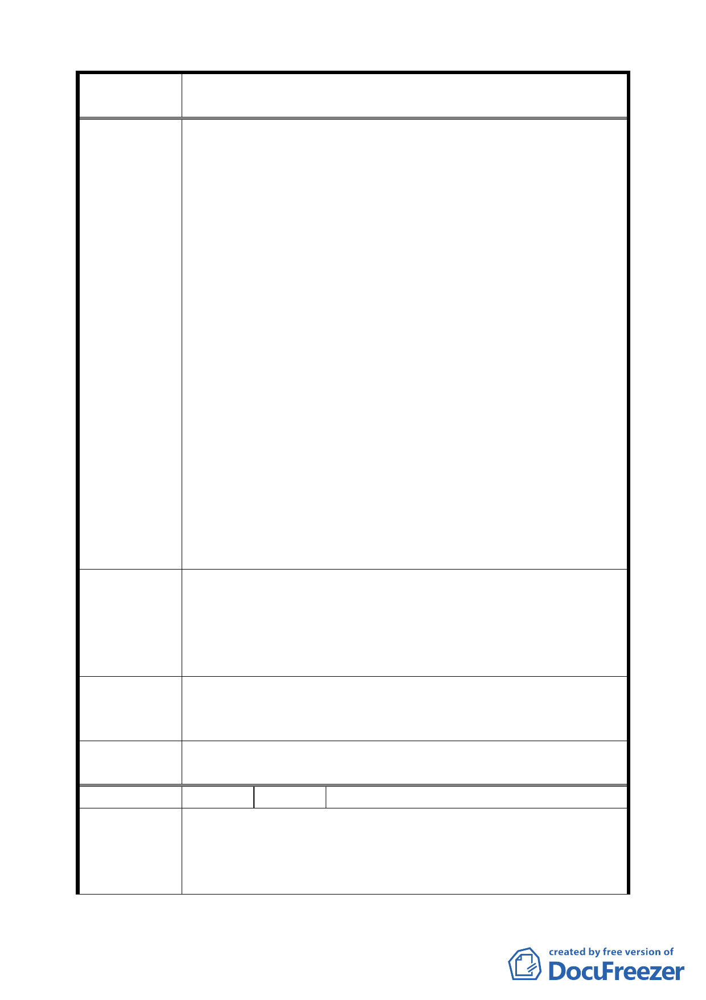

案 名 臺北市文山區都市計畫通盤檢討（主要計畫）案
扼住出口，勢必造成新的瓶頸，並加重世新大學出口一
帶的交通問題。且和興路業已拓寬，加上現有河堤旁道
路，已足敷社區之使用，環山道路的開闢對於整體發展
並無貢獻。
六、以木柵區整體來看世新大學、考試院與埤腹地區共扼木
柵西區的發展。若能妥善合作經營，運用山域大學，考
試院的人文形象，以及埤腹仙跡岩的自然特色，將可整
合營造出一個文山區獨特風貌的新景觀，對於文山區在
地特色意象的形塑將有極大助益。敬請本著向來對於社
區營造積極鼓勵的一貫政策，以及所具有豐碩的經驗，
提供本區一個新的發展機會。
七、依現有環山道路之設計，若開闢道路勢將切除部分坡角，
有導致平面型地滑災害的高度危險，更可能造成其下坡
地區住戶生命財產之損失。貴府明知自己所出版之專業
圖說所述明知風險卻又執意為此道路之開闢，置專業於
何地？
八、綜上所述，無論自經濟、生態、地質、災害以及未來本
區之發展等各面向以觀之，此環山道路之開發對本區不
但無益，甚且可能導致災害，而既無開闢之必要，則應
對本次通盤檢討中，廢除該道路之開闢計畫，並重新擬
塑更能突顯本區獨特風貌的都市計畫。
一、應以維護埤腹地區自然環境之永續發展為念，廢除環山
道路之開闢。
建 議 辦 法 二、就區域規劃之專業角度，利用通盤檢討的機會重新由本
區特色的角度分析，並規劃本區的發展，廢除環山道路
的開闢計畫，設計和興路二側出口動線。
專案小組
審查結論
（94.12.21）
和興路內 5 公尺環山道路（北側部分），變更為保護區；南側
部分基於建築線指定考量，則維持原計畫。
委員會議
決議
依專案小組審查結論辦理。
編 號 ２４ 陳情人 石遠毅（09430082800）
建議位置：華興段四小段 405、406、406-1、406-2 地號。
陳 情 理 由 建議理由：
（ 木 柵 ） 一、原計畫環山道路並無交通功能，原有和興路及堤旁道路
足敷本區使用。
一六